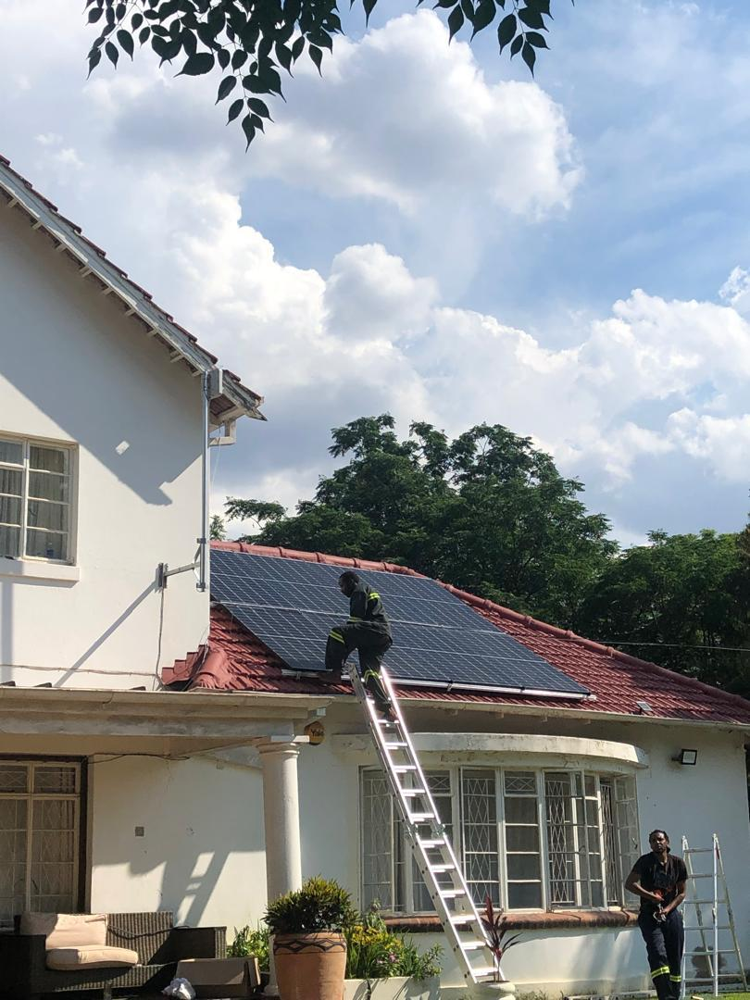
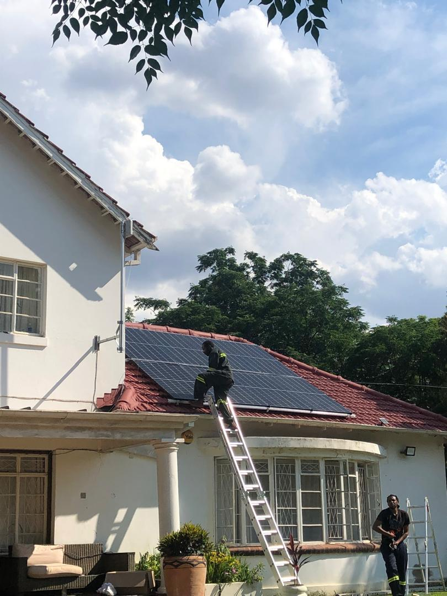

Empowering Communities Through Sustainable Innovation
 

Our latest initiative brings together solar-powered borehole infrastructure and modern
goat house installations, creating a powerful synergy between renewable energy, water
access, and sustainable agriculture. By harnessing solar energy to power boreholes, we
ensure reliable water access for communities and livestock, even in the face of climate
change. Our climate-resilient goat houses promote animal welfare and productivity,
supporting livelihoods in vulnerable regions.
This project also integrates a strong focus on gender-based violence (GBV) prevention,
ensuring that women and girls have safe access to water and economic opportunities,
reducing risks associated with long-distance water fetching. Together, these efforts
reflect
our commitment to climate change adaptation, gender equality,
and community resilience, paving the way for a more sustainable and equitable future.
Explore how we’re driving transformative change through innovative, inclusive
solutions.
Donate
Your financial contributions help us sustain our programs and support those in need.
Donate NowSpread Awareness
Use your voice to raise awareness about our cause and inspire others to take action.
Partnerships
Collaborate with like-minded organizations, government bodies, and corporate sponsors to amplify our impact.
Learn More